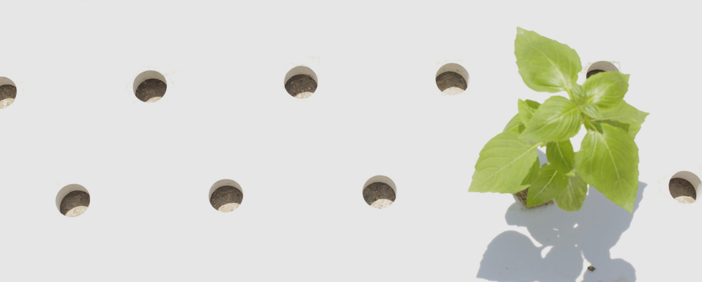
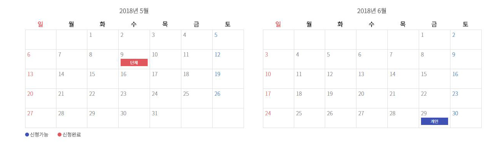

- 
- 아쿠아포닉스 농법으로 재배하는 본 농장


본(BON) 농장견학 소개
채소와 물고기가 공생하며 건강하게 자라는 자연 생태계를 닮은 수경재배 ICT농장입니다.
관리된 최적의 환경에서 40여 종 이상의 채소가 깨끗하고 안전하게 자라납니다.
본 농장만의 체계 3가지!
1. 자연을 닮은 아쿠아포닉스 농법 양어 수경재배를 뜻하는 아쿠아포닉스 농법은
합성비료 대신 물고기 배설물을 영양분으로 채소들이 자라고, 채소가 정화해 준 물에서
다시 물고기가 살아가는 선순환 농법입니다.
2. 농약 및 합성비료 사용 불가!
물고기와 식물이 함께 자라기 때문에 합성비료를 일절 사용할 수 없습니다.
합성비료 대신 자연적인 미생물 분해과정의 영양분과 천적을 이용합니다.
3. 착한 물 사용법
식물이 정화해 준 물을 버리지 않고 다시 순환 사용합니다.
일반 노지재배 대비 1/20의 물을 사용하며 절약을 실천하고 있습니다.

- 9:30~
집결 및 버스 탑승 - 9:30~11:00
본 농장으로 이동 - 11:00~12:00
안전교육 및 오리엔테이션
- 12:00~13:00
본 농장에서 점심식사 - 13:00~17:00
농장체험 및 채소 및 과일 쿠킹 클래스 - 17:00~
집결지로 돌아감.
- ※ 현지 사정에 따라 스케쥴이 달라 질 수 있습니다.
- ※ 출발 시간은 출발지에 따라 변경 될 수 있습니다.
- 